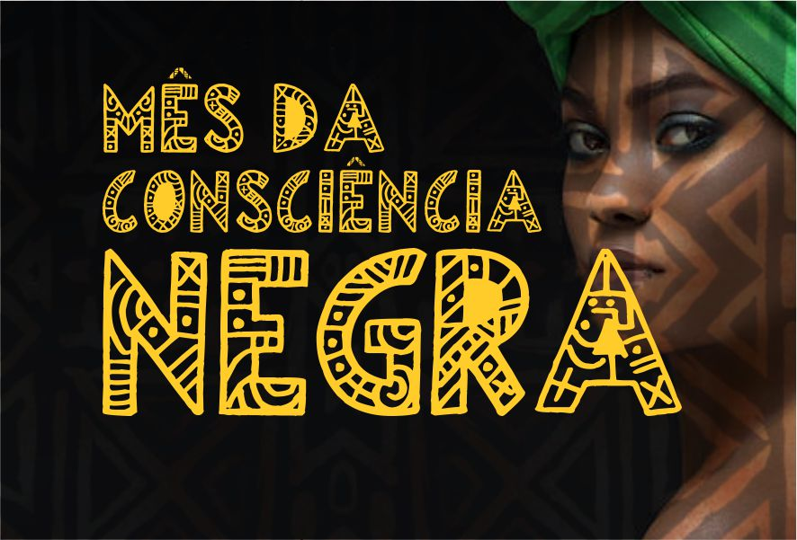
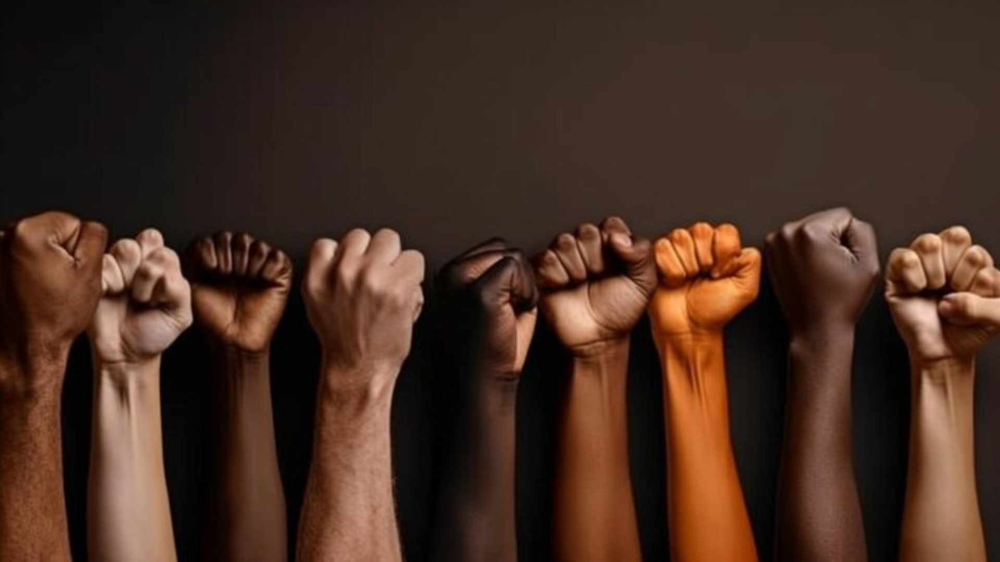

O combate ao racismo nas escolas configura-se como uma prática cotidiana, exigindo um
compromisso
conjunto de toda a comunidade escolar na construção de um ambiente educacional saudável, equitativo e inclusivo.


Letramento racial
Desconstruir formas de pensar e agir naturalizadas e normalizadas socialmente;
Identificar e responder ao racismo e outras questões raciais;